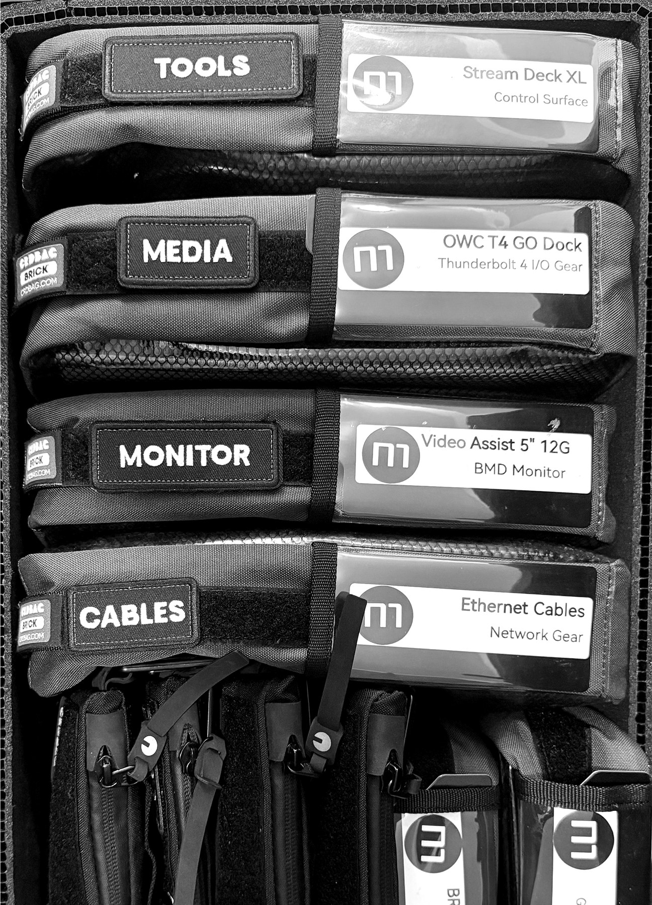
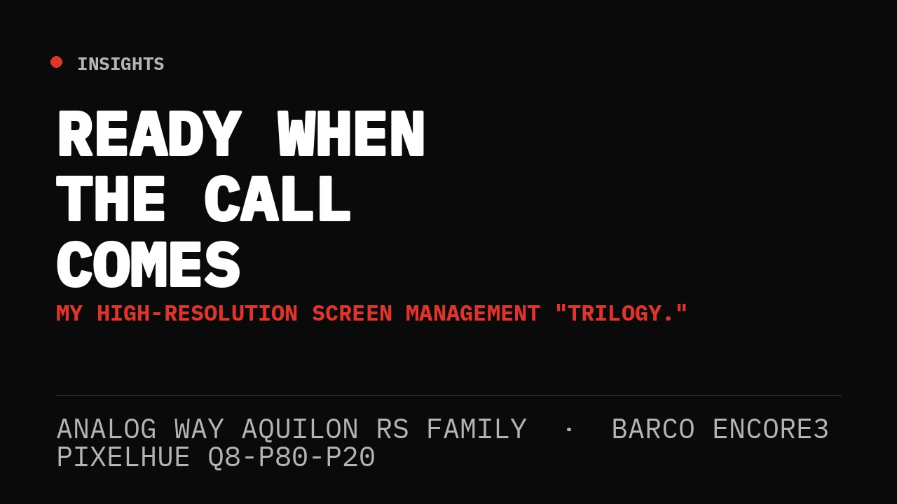
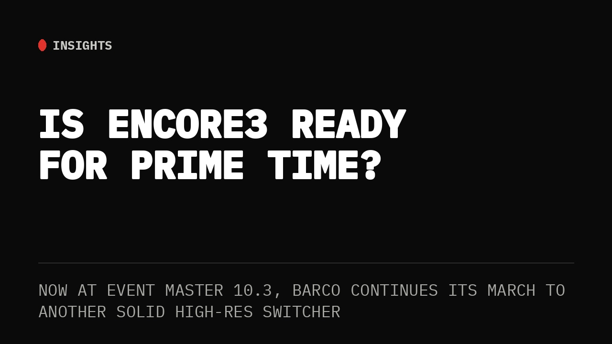
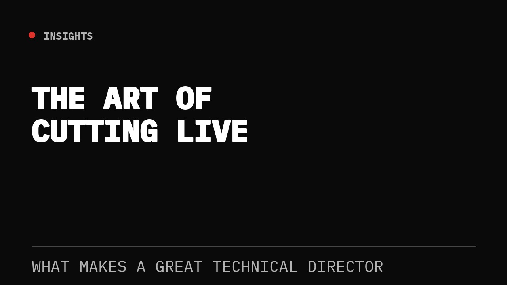
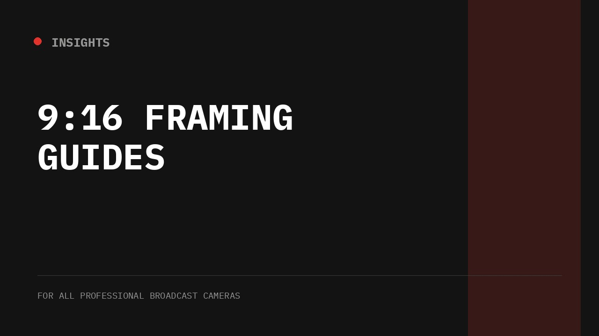
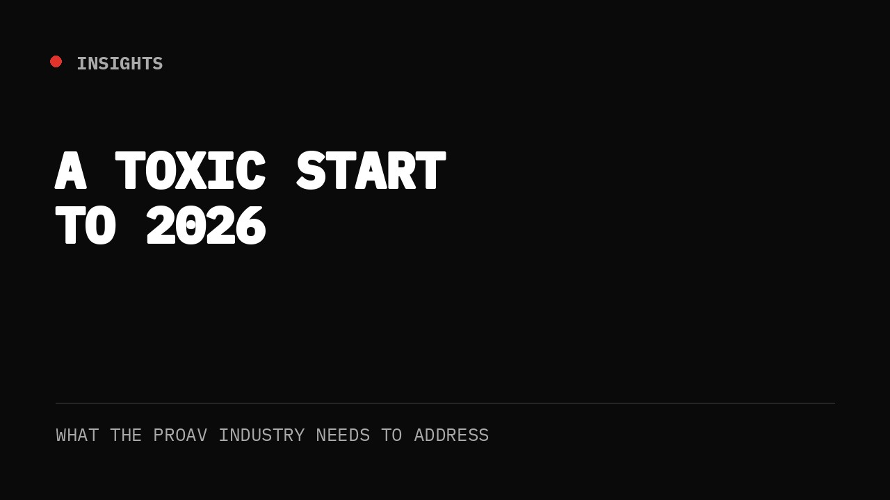
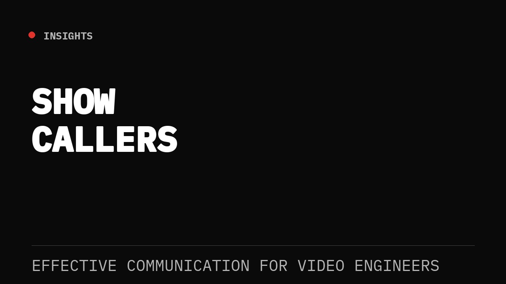

Cue to Cue
Notes from the field.
“I'm frequently asked, ‘How do I become a Video Engineer?’ and my first answer is always, ‘You have to understand Signal Flow.’”
— GEKJr.

Ready When the Call Comes
Why I got certified — my high-resolution screen management "Trilogy" of Analog Way Aquilon, Barco Encore3, and PixelHue.
Read post →
Is Encore3 Ready for Prime Time?
Now at Event Master 10.3, Barco continues its march to another solid high-res switcher.
Read post →Hybrid Isn't Dead — CLOUDflex and AWS Are Proving It
Did ProAV give up on hybrid too soon? A case for CLOUDflex and AWS's proven infrastructure.
Read post →
The Art of Cutting Live: What Makes a Great Technical Director
Every cut is a choice — the best ones disappear into the story. On visual storytelling, timing, and what separates a switcher operator from a great TD.
Read post →
It's Time for 9:16 Framing Guides in All Professional Broadcast Cameras
As live production evolves, camera operators need tools that let them confidently compose for both 16:9 and 9:16 — before the first shot is ever recorded.
Read post →
CorePlay Tetra: Why Analog Way's New Media Server Caught My Attention
Insights: My take on Analog Way's new quad-output playback platform.
Read post →
A Toxic Start to 2026: What the ProAV Industry Needs to Address
Kicking off 2026 with some honest reflection on workplace culture in the ProAV industry.
Read post →
Navigating Show Callers: Effective Communication for Video Engineers
Establishing clear communication and understanding with show callers before the show starts.
Read post →“Are Certifications Necessary? That depends on who you ask. There is no certification that replaces field experience.”
— GEKJr.